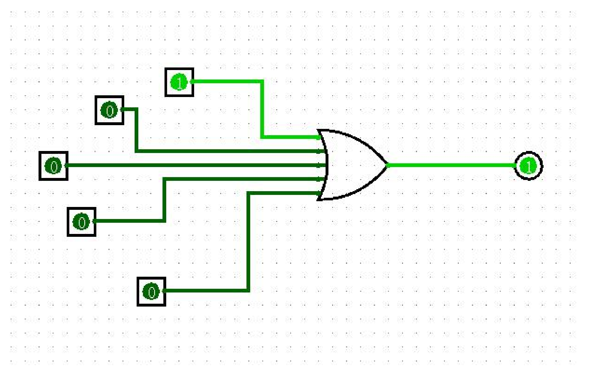
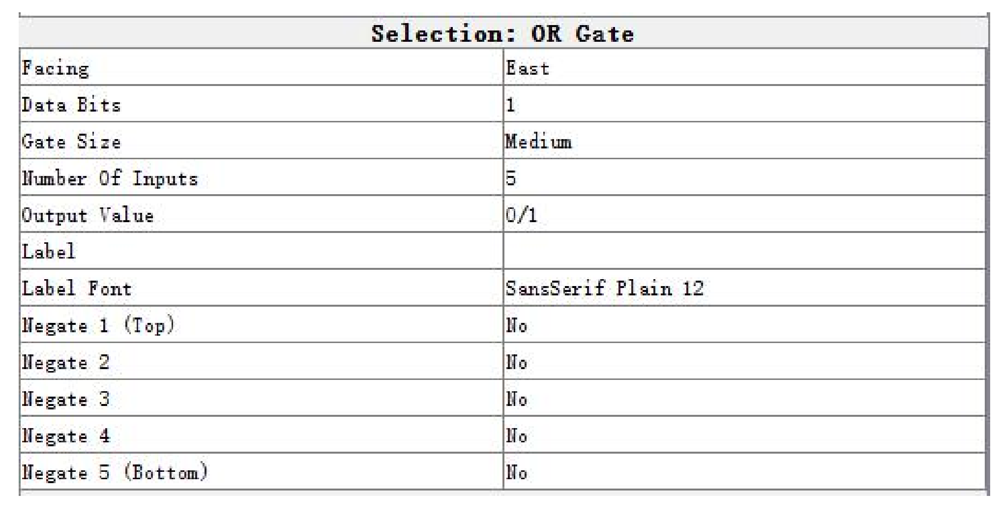
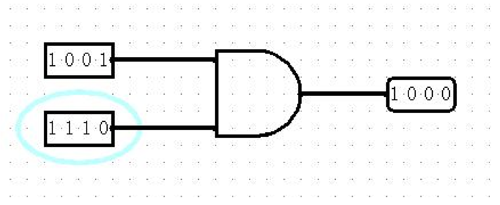
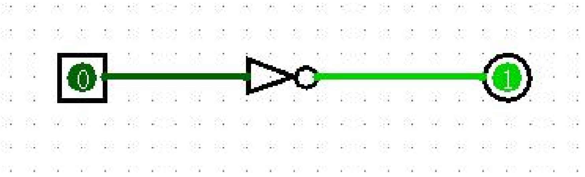

Logisim门电路
或门

如图1 所示为一个 1 位 5 输入的或门，满足逻辑或的运算规则。
我们还可以自定义或门元器件的输入端数量、位宽等信息。

图2的控制面板就可以对这些信息进行修改，例如 Data Bits 指的是元件的位宽，Gate Size 指与门图形大小，Label是标签，用于标记（给你的元件起名），等等。
与门

如图 3 所示，这是一个 4 位 2 输入的与门，进行按位与运算。
非门

此外还有或非门、与非门等等门电路元件可以使用。请参照中文的指导手册学习。